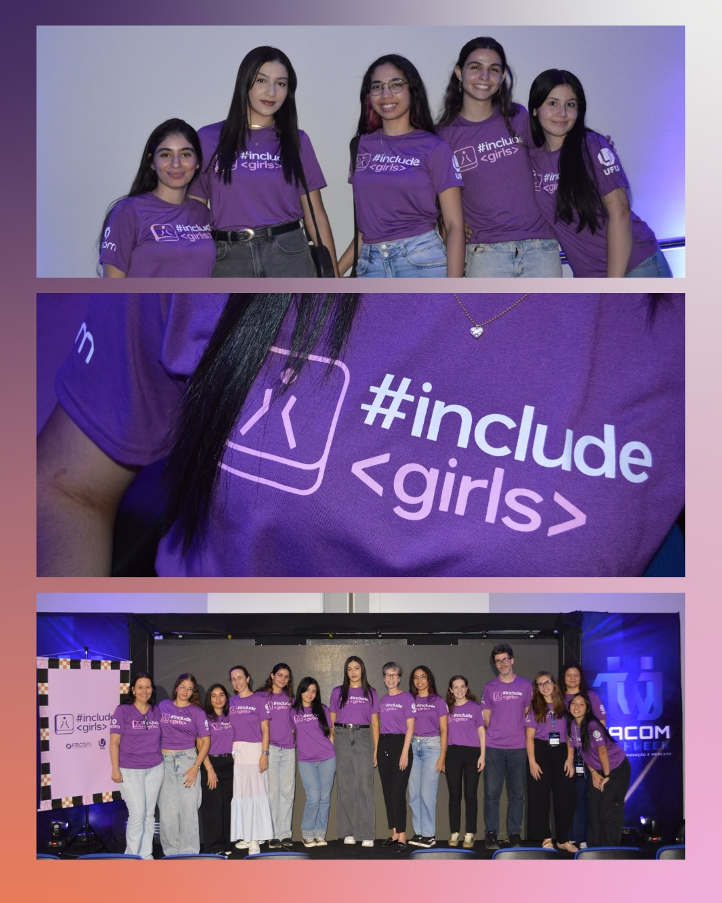
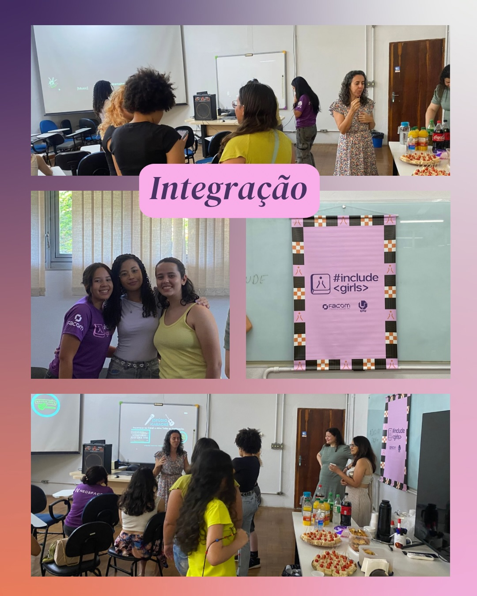
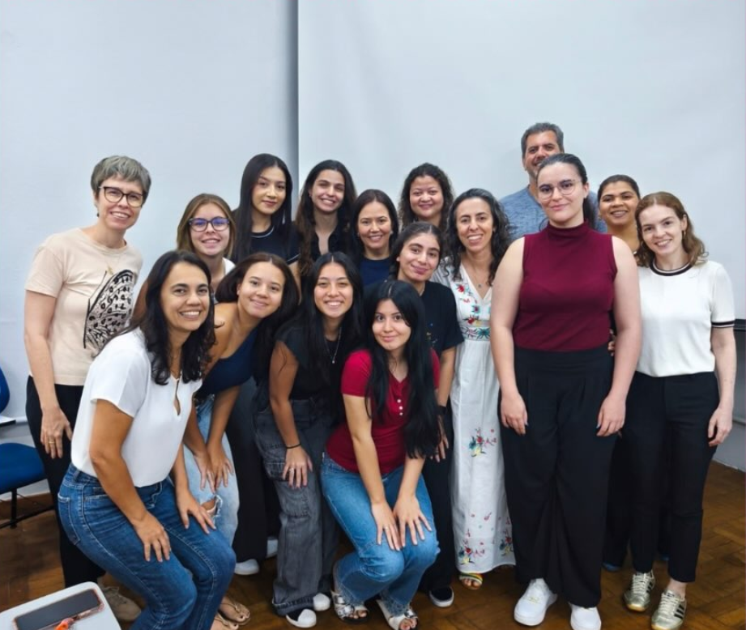
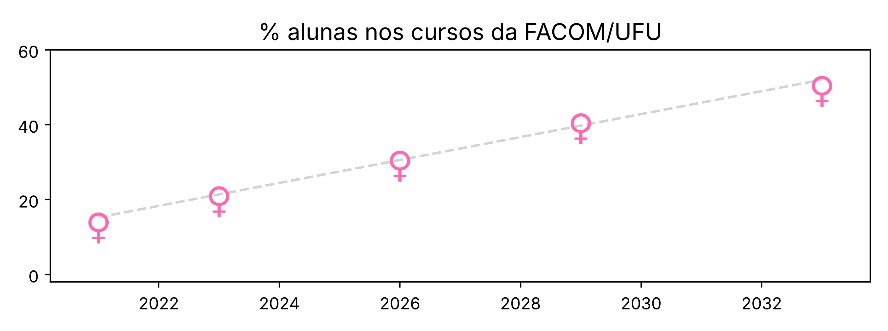

apresentando a nova identidade visual">Nova identidade visual!
O projeto #include <girls> apresenta sua nova imagem
Projeto do #include<girls> recebe selos ODS
“Pensamento Computacional para Alunas do Ensino Médio de Escola Pública” foi contemplado nas categorias ODS 5 e 10

Sarau Cultural realizado
Veja as fotos e a integração promovida pelo evento!

#include<girls> recebe novas integrantes
Com muito prazer recebemos as novas colaboradoras do projeto!
Composição Feminina da FACOM
Docência
20%
Discência
13%
Missão e expectativa do
#include <girls>
